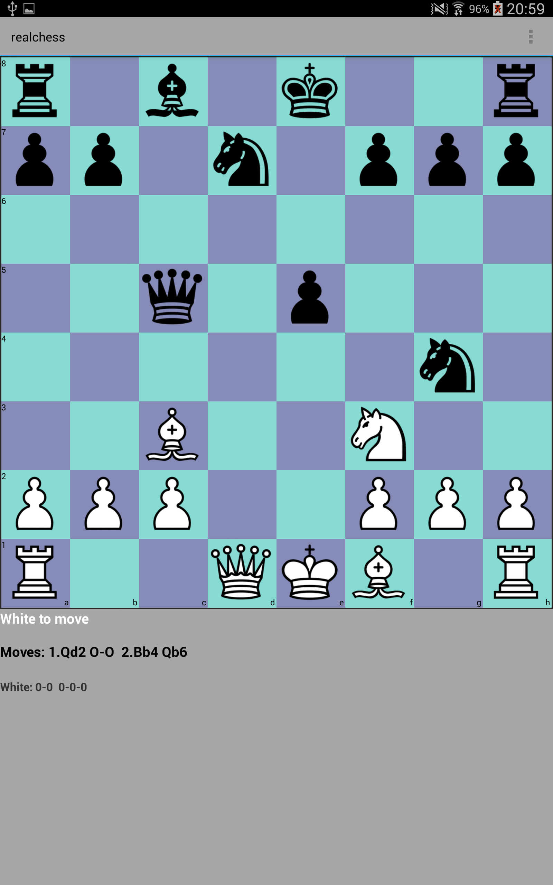
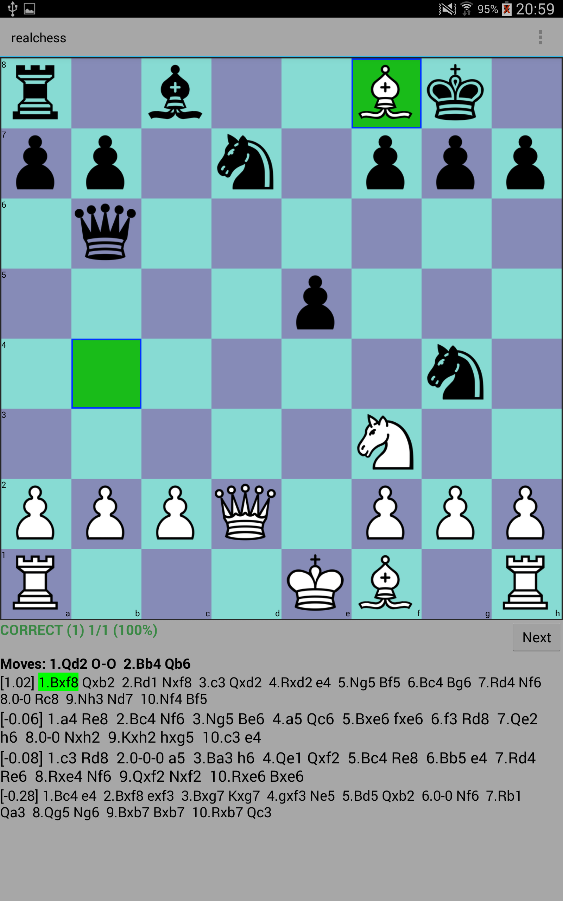

What is RealChess?
RealChess is an app to train your chess skills. RealChess was originally developed by Sheila Timp as a training tool for her children (Grandmaster Jorden, Grandmaster Lucas,
Machteld and Nanne) as the current software was not sufficient for better players. RealChess is now commercially available for ambitious players who want to improve their chess.
RealChess contains about 100.000 chess problems, all extracted from real chess games. For each problem, you have to find the best move. The best move can be either a winning move or a defensive move. RealChess has different challenges. RealChess is different then all other chess apps:
Download Information
Realchess is availabe in the PlayStore.
Problem of the WeekExample

Calculate the following 2 moves ahead: 1.Qd2 0-0 2.Bb4 Qb6. Now find the best move for white.

The solution is Bxf8. The diagram above shows the position after the moves 1.Qd2 0-0 2.Bb4 Qb6. By doing these exercises you will train your visualisation skills. The programme let you choose between zero and 8 blindmoves.
|